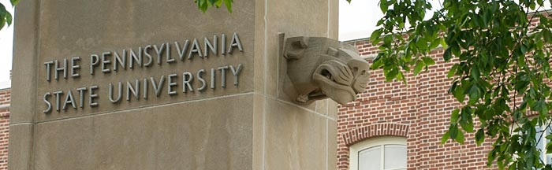

Admissions

Congratulations on your decision to further your education.
Thank you for selecting the Penn State World Campus. Whether your goals are career advancement,
degree completion, or personal enrichment, we have many programs to meet your needs.
Getting Started
The first step toward earning a Penn State degree or certificate is completing
the
online application.
Please note that admission prerequisites and application requirements vary by program.
View the Admissions Requirements section and
select your
program
of interest to learn what you will need to
apply to a specific program. Additionally, there are specific considerations for individuals who are
classified as transfer students,
returning students, international students, or military personnel.
Getting Help
Our Admission Services staff is ready to provide you with:
- Assistance in selecting the best program to meet your needs
- Information about program-specific admission prerequisites
- Information about application requirements and deadlines
- Confirmation of your application status
For help with admissions, email wdadmissions@outreach.psu.edu or call
800-252-3592.